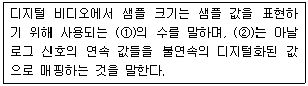
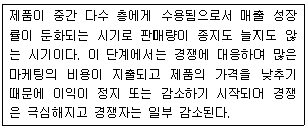
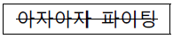
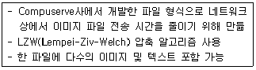

멀티미디어콘텐츠제작전문가(구) (2009-03-01 기출문제)
1과목: 멀티미디어개론
1. 다음 중 TCP/IP의 응용계층에 포함되는 프로토콜(Protocol)은 어느 것인가?
- ARP(Address Resolution Protocal)
- TFTP(Trivial File Transfer Protocol)
- TCP(Transmission Control Protocol)
- IP(Internet Protocol)
(정답률: 알수없음)

2. 다음 중 TCP/IP 통신 프로토콜의 통신 계층에 포함되지 않는 것은?
- 응용 계층
- 세션 계층
- 물리 계층
- 데이터링크 계층
(정답률: 알수없음)
3. 다음 중 데이터 통신의 물리적인 연결 인터페이스와 전자 신호의 규격을 규정하는 기구는?
- TTA(Telecommunications Technology Association)
- EIA(Electronic Industries Association)
- BSI(British Standards Institution)
- JISC(Japanese Industrial Standards Committee)
(정답률: 알수없음)
4. 2차 도메인 기관의 종류에 대한 설명으로 바르지 않은 것은?
- ac: academy(전문대학 이상의 교육 관련 기관)
- go: government(정부기관)
- or: other organization(기타 관련 기관/단체)
- re: recreation(놀이 및 오락 관련 단체)
(정답률: 알수없음)
5. 통신제어장치(CCU; Communication Control Unit)의 역할은?
- 데이터 전송의 특성을 변조시킨다.
- 통신회선을 통하여 송수신되는 자료를 제어하고 감시한다.
- 수신신호에서 아이 패턴을 복조한다.
- 통신회선을 거쳐 온 전송신호를 아날로그 데이터로 변환시킨다.
(정답률: 알수없음)
6. 다음 중 유니코드(Unicode)에 대한 설명으로 거리가 먼 것은?
- 64비트의 구조에 초점을 맞추고 공동의 노력을 경주해온 코드이다.
- 문자집합, 문자인코딩, 문자정보 데이터베이스, 문자들을 다루기 위한 알고리즘을 포함하고 있다.
- 유니코드 표준에 포함된 문자들은 각자의 고유한 코드 포인트를 가지고 있다.
- 전 세계의 모든 문자를 컴퓨터에서 일관되게 표현할 수 있도록 설계된 산업표준이다.
(정답률: 알수없음)
7. 다음 중에서 가상터미널(VT; Virtual Terminal) 기능을 가지고 있는 것은 무엇인가?
- 고퍼
- 아키
- 텔넷
- FTP
(정답률: 알수없음)
8. 미디어 인식에 사용되는 디지털 입력 장치가 아닌 것은?
- ASCII키보드
- 오디오 디지타이저
- 이미지 스캐너
- 프린터
(정답률: 알수없음)
9. 다음 중 데이터의 크기가 가장 작은 것은?
- 2000개의 한글 문자를 기록한 텍스트 데이터
- 30×30 크기의 4비트 컬러 이미지 데이터
- 4000개의 ASCII문자를 기록한 텍스트 데이터
- 30×30 크기의 24비트 컬러 이미지 데이터
(정답률: 알수없음)
10. 이미지와 그래픽 파일 포맷 중에서 벡터 그래픽의 특징으로 볼 수 없는 것은 무엇인가?
- 화면 확대 시 화질의 저하가 발생하지 않는다.
- 픽셀들이 모여서 하나의 이미지를 만들어 내는 방식이다.
- 일러스트레이션(illustration)에 적합한 방식이다.
- 그래픽 소프트웨어 중 그리기 도구를 이용하여 점, 선, 곡선, 원등과 같은 기하적 개체로 생성한다.
(정답률: 알수없음)
11. 데이터 전송 속도를 나타내는 단위는?
- bps
- 렌
- dpi
- ftp
(정답률: 알수없음)
12. 아날로그 데이터를 디지털화하는 PCM 단계에 해당되지 않는 것은?
- 복호화
- 표본화
- 부호화
- 양자화
(정답률: 알수없음)
13. 파형 코딩 방법 중 연속된 샘플의 값들 사이의 차이만을 인코딩하고 저장함으로써 압축을 하는 방식으로 ITU-T의 음성압축 표준인 G.72X의 핵심기법인 코딩 방법은?
- CM(Code Modulation)
- PCM(Pulse Code Modulation)
- DPCM(Differential PCM)
- ADPCM(Adaptive Differential PCM)
(정답률: 알수없음)
14. 종이로된 인쇄물을 컴퓨터로 입력하는 장치인 스캐너의 해상도 단위로 가장 적당한 것은?
- dpi
- lpi
- bps
- bit
(정답률: 알수없음)
15. 사운드 파형의 기준선에서 최고점까지의 거리를 의미하며 소리의 크기와 관련이 있는 것은?
- 진폭(Amplitude)
- 주파수(Frequency)
- 음색(Tone Color)
- 잡음(Noise)
(정답률: 알수없음)
16. 다음 중 인터넷 메일의 표준화 규격인 MIME에서 JPEG 화상을 전자우편으로 송신할 때의 데이터 유형으로 적절한 것은?
- Multipart
- Video
- Message
- Image
(정답률: 알수없음)
17. 사운드의 압축 및 복원에 관한 표준으로 거리가 먼 것은?
- 동영상의 표준과 함께 MPEG 등에 규정되어 있다.
- 플랫폼에 따른 파일 저장을 위해 WAV, AIFF 및 며 등의 포맷이 제정되어 있다.
- 디지털 악기 간의 인터페이스는 MIDI에서 규정하고 있다.
- 사운드를 플랫폼에 독립적으로 제작하고 재생할 수 있도록 ODA, SGML, XMLHEG 등이 제정되었다.
(정답률: 알수없음)
18. ( )안에 들어갈 내용으로 알맞은 것은?

- ①비트 ②양자화
- ①바이트 ②동기화
- ①프레임 ②동기화
- ①프레임 ②양자화
(정답률: 알수없음)
19. 다음 중 렌더링과 관련이 없는 것은?
- 레이캐스팅
- 은면제거
- 레이트레이싱
- 와이어프레임 제작
(정답률: 알수없음)
20. 멀티미디어 스트리밍(streaming) 방식에 대한 설명으로 거리가 먼 것은?
- 재생을 위한 대기 시간이 짧아 실시간방송에 적합하다.
- 데이터 저장을 위한 저장 공간이 적게 든다.
- 파일이 완전히 다운로드 되면 바로 재생된다.
- 파일의 무단 복제나 수정, 배포 등의 문제를 최소화 할수 있다.
(정답률: 알수없음)
21. 다음 중 Extra CD라고도 부르는 LaserDisc에 대한 규격이 기술되어 있는 국제표준규격은?
- Blue-Book
- Orange-Book
- Green-Book
- Yellow-Book
(정답률: 알수없음)
22. JPEG 파일의 특징에 대한 설명으로 거리가 가장 먼 것은?
- 파일 포맷은 8비트 래스터 그래픽 파일을 좀 더 제어하기 쉽게 만든 것이다.
- 정지화상을 위해 만들어진 손실 압축 방법을 사용한다.
- JFIF는 JPEG 스트림을 저장과 전송에 적합한 형태로 담는 이미지파일 형식이다.
- 웹상에서 사진 등의 화상을 보관하고 전송하는데 가장 널리 사용되는 파일 형식이다.
(정답률: 알수없음)
23. 다음 중 웹을 통해 유통되는 디지털 콘텐츠의 불법복제 방지를 위한 보호 방식은 어느 것인가?
- DRM
- DVM
- DCM
- PCM
(정답률: 알수없음)
24. 7.1 채널의 홈시어터에서 0.1채널을 제공하는 스피커의 명칭은 무엇인가?
- 좌측 스피커
- 우측 스피커
- 중앙 스피커
- 서브 우퍼
(정답률: 알수없음)
25. 다양한 네트워크 및 장치에 있는 멀티미디어 콘텐츠 자원을 효율적으로 이용하는데 목표를 두고 있으며, 전자상거래 환경에서 다양한 네트워크와 다양한 단말기를 이용하여 사용자가 상호호환 방식으로 쉽고, 편리하게 생성, 배급, 이용할 수 있는 방법을 정의, 구현할 수 있는 국제 표준 규격은?
- MPEG-7
- MPEG-12
- MPEG-16
- MPEG-21
(정답률: 알수없음)
2과목: 멀티미디어기획및디자인
26. 웹 사이트 구축 시 사용되는 메뉴유형 설명이 잘못된 것은?
- 텍스트 메뉴는 용량이 적어 속도가 빠르다.
- 자바스크립트를 사용하여 롤오버 버튼을 제작할 수 있다.
- 플래시로 메뉴를 만들어 다양한 효과가 첨가된 메뉴제작이 가능하다.
- 이미지 맵으로 제작된 메뉴는 이미지 이외의 추가적인 코드에 대한 지원이 필요 없이 시간소요가 적다.
(정답률: 알수없음)
27. 점을 기초로 한 구성에 대한 설명 중 거리가 먼 것은?
- 공간에 한 점을 두면 집중력이 생긴다.
- 공간에 두 점 이상을 가까운 거리로 떼어 놓으면 상호의 장력으로 선이나 형의 효과가 생긴다.
- 많은 점을 접근 시키면 선을 느낀다.
- 정렬된 점군의 간격 결정방법에 따라 각각 움직임의 효과가 달라진다.
(정답률: 알수없음)
28. 다음 중 디자인의 기본요소가 아닌 것은?
- 면
- 원
- 입체
- 선
(정답률: 알수없음)
29. 사용자의 일정한 액션에 대해 즉각적으로 반응하는 것을 무엇이라 하는가?
- 보상
- 피드백
- 성취
- 흥미
(정답률: 알수없음)
30. 디자인 요소들 간의 관계 조절을 원활하게 유지하기 위하여 적용되는 디자인 조건은?
- 질서성
- 심미성
- 합목적성
- 경제성
(정답률: 알수없음)
31. 디자인의 조형 요소 중 콘텐츠의 화면 분할을 하기 위한 가장 기본적인 요소를 무엇이라고 하는가?
- 점
- 선
- 면
- 입체
(정답률: 알수없음)
32. 다음 그래픽 디자인 과정 중 가장 먼저 이루어져야 하는 단계는?
- 제작 도구 선정
- 색상 선택
- 이미지 구상
- 레이아웃 디자인
(정답률: 알수없음)
33. 웹 기획에서 고객의 의사가 잘 반영되었는지의 여부를 알기 위하여 시장조사를 실시한다. 이러한 시장조사시에 주의할점으로 옳은 것은?
- 개별적인 인터넷 비즈니스 업체의 성과보고서에 의존하여야 한다.
- 국내 시장 환경을 끊임없이 주시하고 분석하여야 한다.
- 한 가지 시장조사 방법을 노하우로 사용하여야 한다.
- 외국에서 성공한 사례들을 반드시 받아들여야 한다.
(정답률: 알수없음)
34. 인터페이스 디자인에서 아이콘, 심볼 디자인 시 고려사항으로 옳은 것은?
- 특수 분야에서 쓰이는 특정한 형태로 나타낸다.
- 아이콘 형태를 각각 다르게 디자인 한다.
- 단순 명료한 형태이며, 시각적으로 쉽게 인식할 수 있도록 한다.
- 적절한 비유로 사용자가 천천히 반응하도록 디자인한다.
(정답률: 알수없음)
35. 멀티미디어 디자인에서 웹 페이지의 시각적 요소들에 대한 설명이다. 틀린 것은?
- 배경, 레이아웃, 아이콘, 헤더 등에서 이미지와 색채를 일관성 있게 사용해야 한다.
- 텍스트 사용에서 브라우저상에서 표현할 수 있는 글자체에는 한계가 있기 때문에 모든 텍스트를 그래픽 문자로 사용하는 것이 바람직하다.
- 웹 페이지에서 색은 그 페이지의 전체적인 분위기를 좌우하는 만큼 그 페이지의 주제나 내용과 연관성 있는 색을 선택한다.
- 사용자의 연상이나 경험과 관련된 시각 메타포(metaphor)를 사용하여 이해도를 높인다.
(정답률: 알수없음)
36. 다음 중 사용자 인터페이스에서 정보의 가시화와 관련이 먼 것은?
- 가시성
- 투명성
- 무결성
- 일관성
(정답률: 알수없음)
37. 다음 중 페이지 레이아웃에서 고려해야 할 내용과 가장 거리가 먼 것은?
- 화면에서의 페이지 배치
- 저작권자 사인, 디자이너 표기
- 페이지 크기
- 내비게이션 메뉴
(정답률: 알수없음)
38. 대표적인 아이디어 발상기법의 하나로 특히 5-7명의 집단이 취적이며, 일정한 규칙을 지켜가며 전원이 자유로이 의견을 내는 기법은?
- 자유연상법
- 유비법
- 브레인스토밍
- 전문가시스템
(정답률: 알수없음)
39. 멀티미디어 디자인의 구성요소 중 텍스트에 관한 설명으로 옳은 것은?
- 멀티미디어 타이틀에서 텍스트는 정적인 텍스트만을 사용한다.
- 텍스트의 서체에서 세리프(Serif)는 문자의 끝 부분에 삐침이 없는 서체를 말한다.
- 비트맵 폰트는 트루타입(Truetype) 폰트라 하며, 문자의 윤곽선을 수학적인 함수로 표현한다.
- 글자크기 1포인트(point)는 72분의 1인치(inch)를 나타낸다.
(정답률: 알수없음)
40. 웹 디자인에서 내비게이션에 대한 설명으로 거리가 먼 것은?
- 웹 콘텐츠를 분류하고 체계화시킨 후 이들을 연결시켜 방문자로 하여금 웹사이트를 이용할 수 있게 하는 체계를 말한다.
- 일관성 있는 아이콘과 그래픽을 사용하여 사용자가 홈페이지 어디서라도 길을 잃지 않고 필요한 정보를 쉽게 얻을 수 있도록 하는 것이다.
- 웹 사이트의 전체적인 분위기를 결정하고 개인의 홍보나 회사의 홍보, 또 사용자간의 자발적 참여와 커뮤니티를 형성한다.
- 사이트의 이동경로나 이동방법, 이동을 돕는 구조와 인터페이스를 모두 포함하는 개념이다.
(정답률: 알수없음)
41. 컴퓨터그래픽스의 기본개념인 픽셀에 대한 설명으로 거리가 먼 것은?
- 일반적으로 픽셀의 종횡비는 1.45:1 이다.
- 픽셀(pixel)이란 디지털 이미지의 최소단위를 말하는 것으로 Picture 와 Element의 두 단어의 결합에서 생겨났다.
- 픽셀의 집약 해상도(Intensity Resolution)는 각 픽셀에서 저장된 비트맵의 수이다.
- 각 픽셀은 각각의 위치 값을 가진다.
(정답률: 알수없음)
42. 면(Plane)의 의미 및 특성에 대한 설명 중 거리가 가장 먼 것은?
- 구성의 가장 큰 영향력을 가지며 점을 기본요소로 하고 있다.
- 2차원으로 선이 움직인 자취를 말한다.
- 선의 길이나 곡률에 절대적인 지배를 받는다.
- 넓이는 있지만 두께는 없다.
(정답률: 알수없음)
43. 다음 중 특정 대상인 기업, 회사, 단체, 제품, 행사 등을 특징 있게 나타낼 수 있는 시각적인 상징물을 무엇이라고 하는가?
- 컷(Cut)
- 캐릭터(Character)
- 카툰(Cartoon)
- 캐리커처(Caricature)
(정답률: 알수없음)
44. 2차원 공간에 정지되었던 문자를 동적으로 움직이게 하는 디자인으로 다양한 멀티미디어 요소를 이용해 효과적으로 의미를 전달할 수 있는 개념은?
- 레이아웃
- 모션 타이포그래피
- 그리드
- VRML
(정답률: 알수없음)
45. 다음 중 PNG(Portable Network Graphics)파일에 대한 설명으로 가장 올바른 것은?
- 감마 교정기능이 있어, 특정 디스플레이 제작회사에 의해 요구되는 색상밝기의 형태로 이미지를 보정할 수 있다.
- 어도비(Adobe)사에서 개발한 페이지 기술 언어인 포스트 스크립트(Postscript)로 만들어진 그래픽 파일 포맷이다.
- 매킨토시 기종에서만 유통하게 쓰이는 그래픽포맷이다.
- Shockwave file로써 플래시에서 무비형식으로 저장하는 방식이다.
(정답률: 알수없음)
46. 타이포그래피디자인 중 캘리그래피(Calligraphy)에 대한 설명으로 거리가 먼 것은?
- 글자를 아름답게 쓰는 기술 또는 예술을 의미한다.
- 캘리그램이라는 용어를 처음으로 사용한 사람은 기욤아 뽈리네르이다.
- 좁게는 서예를 가리키고 넓게는 활자이외의 서체를 뜻하는 말이다.
- 그림과 메시지라는 의미를 갖는 전보(telegram)의 합성어이다.
(정답률: 알수없음)
47. 벡터그래픽(Vector Graphic) 파일 포맷으로 적당한 것은?
- gif
- pcx
- ai
- bmp
(정답률: 알수없음)
48. 다음 스토리보드에 관한 설명으로 거리가 먼 것은?
- 인화된 사진으로만 제작하여야 한다.
- 시나리오 이상의 중요한 요소가 된다.
- 영화에 있어서는 촬영대본과 같다.
- 작품의 설계도라고 할 수 있다.
(정답률: 알수없음)
49. 다음 중 스토리보드에 사용되는 용어의 약자가 바르지 못한 것은?
- 배경음악 : BGM(Back Ground Music)
- 효과음 : SE(Special Effect)
- 해설 : ST(Story)
- 대사 : M(Ment)
(정답률: 알수없음)
50. 다음은 제품 수명 주기의 단계에서 어느 시기인가?

- 도입기(Introduction Stage)
- 성장기(Growth Stage)
- 성숙기(Maturity Stage)
- 쇠퇴기(Decline Stage)
(정답률: 알수없음)
3과목: 멀티미디어저작
51. 사용자 인터페이스 디자인에 대한 설명으로 옳은 것은?
- 사용자와 대상물 사이의 상호작용을 규정한다.
- 인터페이스 디자인이 확정되면 모듈별 프로그래밍이나 저작 작업이 가능하다.
- 사용자의 반응에 부응하여 움직이는 방식과 같은 인체공학적 이슈를 지칭하며, 심리적인 부분은 포함하지 않는다.
- 개별적 그래픽 디자인이 완성된 후에 인터페이스 디자인이 이루어진다.
(정답률: 알수없음)
52. DTD문서의 엘리먼트 선어부에서 엘리먼트들이 가질 수 있는 콘텐트의 종류를 선언할 수 있다. 다음 중 콘텐트 종류가 아닌 것은?
- ANY
- EMPTY
- ELEMENT
- KDATA
(정답률: 알수없음)
53. 다음 미디어 파일 중 성격이 다른 하나는 무엇인가?
- TGA
- GIF
- RTF
- TIF
(정답률: 알수없음)
54. 데이터베이스 시스템의 구조에 포함되지 않는 단계는?
- 외부 단계
- 개념 단계
- 내부 단계
- 저장 단계
(정답률: 알수없음)
55. 데이터베이스 관리 시스템의 제어 기능에 대한 설명으로 옳은 것은?
- 사용자의 입장에서 사용이 쉽고 자연스럽게 사용할 수 있어야 한다.
- 응용 프로그램과 데이터베이스 사이의 인터페이스를 제공하는 기능이다.
- 저장된 데이터의 내용에 대해 정확성과 안전성을 유지하는 기능이다.
- 물리적 장치에 데이터를 저장하기 위해서 물리적 저장에 관한 명세 기능을 지원해야 한다.
(정답률: 알수없음)
56. 웹에서 사용되는 하이퍼텍스트를 기술하는 언어의 종류인 HTML의 내용과 거리가 가장 먼 것은?
- 'Hyper Text Markup Language'의 약자이다.
- HTML에서는 다른 문서로 링크되어 있는 항목을 선택하여 다른 문서로 이동할 수 있다.
- 다양한 플랫폼 지원과 확장성이 뛰어나다는 특징을 가지고 있다.
- 문서 형식을 기술하는 마크업(Markup)언어의 하나이다.
(정답률: 알수없음)
57. SGML과 HTML를 비교할 때 틀린 내용은?
- HTML은 문서가 갖고 있는 다양한 구조를 반영하는데 제한이 없다.
- HTML은 SGML의 Subset으로 수많은 SGML의 DTD 중 하나이다.
- SGML의 태그는 Self-explanation인데 비해 HTML 태그는 그렇지 못하다.
- HTML은 인쇄 문서를 디지털 문서로 변경하여 생성한다.
(정답률: 알수없음)
58. 1993년 미국 Adobe Systems에서 개발한 프린터(Printer) 출력 스크립트(Script) 기술 언어는?
- 자바스크립트
- 링고스크립트
- 포스트스크립트
- 액션스크립트
(정답률: 알수없음)
59. 플래시(Flash) 액션스크립트 2.0에서 사용하는 연산자에 대한 설명으로 옳은 것은?
- a=b : a와 b가 같다.
- a%b : a를 b로 나눈 몫
- a!=b : a와 b가 같지 않다.
- a＞b II a＜c : a가 b보다 크고, a가 c보다 작다.
(정답률: 알수없음)
60. 오픈스크립트에 대한 설명으로 옳지 않은 것은?
- 툴북에서 제공하는 프로그래밍 언어이다.
- 오픈스크립트를 사용하여 코스웨어를 확장 및 개선할 수 있다.
- 오픈스크립트를 활용한 툴북의 프로그래밍은 Event-Driven방식을 취하고 있다.
- 플로우차트(flowchart)처럼 작업의 순서를 명세해 나간다.
(정답률: 알수없음)
61. HTML 문서에서 글자 모양 효과를 이탤릭체로 나타내기 위해 사용하는 태그(Tag)는?
- ＜B＞글자모양＜/B＞
- ＜SUB＞글자모양＜/SUB＞
- ＜I＞글자모양＜/I＞
- ＜BLIN＞글자모양＜/BLIN＞
(정답률: 알수없음)
62. 정규표현식(Regular Expression)이란 입력받은 데이터 값이 특정한 형태를 가지는지를 검사하는 방식을 의미한다. 다음중 HTML 폼 값에서 넘겨받은 이메일 주소가 형식에 맞는지, 혹은 홈페이지 주소가 형식에 맞는지 등을 확인하기 위한 PHP의 문자열 검사 함수는?
- echo()
- ereg()
- ereg_replace()
- check()
(정답률: 알수없음)
63. HTML에서 ＜H＞와 ＜FONT SIZE＞ 태그(Tag)에 대한 설명으로 적절하지 못한 것은?
- 제목의 크기를 조절할 때 사용되며 문자열의 크기를 6단계(H1~H6)로 나타낼 수 있다.
- ＜H＞ 태그에서는 숫자가 작을수록 글자의 크기는 크고 반면에 숫자가 클수록 글자의 크기는 작다.
- ＜FONT SIZE＞ 태그(Tag)는 FONT SIZE에 지정되는 수를 1~7까지 사용하여 문자의 크기를 조절할 수 있다.
- FONT SIZE 기본값은 5이며, ＋, - 기호를 사용하여 기본값 5에서 더하거나 빼줄 수 있다.
(정답률: 알수없음)
64. HTML에서 테이블 태그에 관한 설명 중 가장 바르게 설명한 것은?
- 테이블 속성에서 cellspacing이란 칸 안에서의 여백을 조정하는 것이다.
- 테이블 속성에서 border란 테이블 둘레의 Margin 값을 의미한다.
- 테이블 속성에서 rules는 표 안쪽의 칸과 칸 사이의 경계선 유무를 지정한다.
- hspace/vspace는 칸을 삽입할 때 지정한다.
(정답률: 알수없음)
65. Dynamic HTML에 대한 설명으로 틀린 것은?
- HTML 문서 자체의 기능으로 브라우저에서 실행되므로 클라이언트의 부담이 적다.
- 이벤트에 대한 즉각적인 반응이 가능하다는 장점을 가지고 있다.
- 자바 애플릿이나 CGI보다 구현이 쉬우면서 비슷한 기능을 나타낼 수 있다.
- 웹 페이지 구성요소의 위치를 자유롭게 지정할 수 있다.
(정답률: 알수없음)
66. XML의 구조를 정의하는 부분을 무엇이라 하는가?
- DTD
- XSl
- SGML
- DFD
(정답률: 알수없음)
67. XML을 시작할 때에는 항상 XML 문서임을 선언해야 한다. 다음 중 선언부에 쓰이는 태그는?
- ＜? … ?>
- ＜/ … /＞
- ＜* … *>
- ＜% … %＞
(정답률: 알수없음)
68. XML 문서 정보를 자유롭고 쉽게 다루도록 해주며, 보다 간단하게 프로그램 또는 스크립트를 통해 HTML이나 XML과 같은 웹 문서의 내용, 구조 및 스타일 정보를 찾거나 수정하는 등의 조작을 할 수 있도록 지원해 주는 것은?
- SAX(Simple APi for XML)
- DOM(Document Object Model)
- Nameinterface
- XPath
(정답률: 알수없음)
69. XML에서 스타일시트를 표시하기 위한 언어를 무엇이라 하는가?
- SML(Stylesheet Markup Language)
- XSL(eXtensible Stylesheet Language)
- CSL(Cascading Stylesheet Language)
- SSL(Style Sheets Language)
(정답률: 알수없음)
70. 다음 중 핸들러(handler)에 대한 설명으로 맞는 것은?
- 디렉터 파일이 재생될 때 스크립트 중 수행되는 명령어를 핸들러라 한다.
- 핸들러는 키보드 명령을 제외한 마우스 클릭에 의한 이벤트들을 처리한다.
- 무비 시작이나 종료 같은 환경 변화는 핸들러에서 제어되지 않는다.
- 모든 핸들러는 on으로 시작해서 quit로 끝난다.
(정답률: 알수없음)
71. CSS(Cascading Style Sheet)의 태그 중 font-weight가 하는 역할은 무엇인가?
- 글꼴 굵기
- 글꼴 크기
- 자간 조절
- 라인을 이용한 장식
(정답률: 알수없음)
72. 다음은 PHP에서 제공되는 함수를 나열한 것이다. 옳지 않은 것은?
- split 함수 : 문자열을 나누어 배열로 저장하는 함수
- sendmail 함수 : 메일 보내기 함수
- srand 함수 : 난수를 만드는 함수
- unlink 함수 : 특정 파일을 삭제할 때 사용하는 함수
(정답률: 알수없음)
73. 자바스크립트의 내장 String 객체에서 아래와 같은 결과를 얻기 위한 메소드(Method)는?

- anchor()
- sup()
- toLowerCase()
- strike()
(정답률: 알수없음)
74. 자바스크립트의 브라우저(Browser) 내장 객체로 객체의 계층구조에서 최상위에 있는 객체는?
- Window 객체
- Document 객체
- History 객체
- Location 객체
(정답률: 알수없음)
75. 자바스크립트(Javascript)에서 달력과 같이 현재의 날짜와 시간, 특정 날짜를 구할 때 용이하게 사용할 수 있는 내장 객체는?
- String 객체
- Navigator 객체
- Date 객체
- Math 객체
(정답률: 알수없음)
4과목: 멀티미디어제작기술
76. 아날로그 사운드를 디지털 형태로 바꾸는 과정 중 표본화(Sampling)에 대한 설명으로 거리가 먼 것은?
- 표본화를 많이 할수록 원음에 가깝게 표현할 수 있다.
- 표본화를 크게 할수록 데이터 저장을 위한 공간이 증가한다.
- 아날로그 파형을 디지털 형태로 변환하기 위해 표본을 취하는 것이다.
- 표본화에서의 기록단위는 데시벨(dB)이다.
(정답률: 알수없음)
77. 아날로그 이미지를 디지털화하는 과정 중에서 양자화가 포함된다. 다음 중 양자화에 대한 설명으로 틀린 것은?
- 이산적인 색상의 값을 연속치로 변환하는 것이다.
- 일반적으로 흑백 사진은 256 레벨의 값을 가진다.
- 양자화 에러 시에 잘못된 모서리가 나타날 수 있다.
- 표현 가능한 수가 2G일 때 , G비트 양자화라 한다.
(정답률: 알수없음)
78. MPEG-1 Audio 의 규격 중 압축률이 1:10 ~ 1:12 정도로 우수하며 음을 주파수 대역별로 나누어 이를 압축하는 방법을 사용하는 규격은 다음 중 어떤 것인가?
- MPEG Audio Layer - 1
- MPEG Audio Layer - 2
- MPEG Audio Layer - 3
- MPEG Audio Layer - 4
(정답률: 알수없음)
79. 오디오 기술자 협회와 유럽방송연맹이 공동으로 제정한 디지털 신호 인터페이스 규격으로 프로용 기기에 많이 사용되며 XLR 단자를 사용하는 것은?
- AES/EBU
- S/PDIF-2
- S/PDIF
- Optical Interface
(정답률: 알수없음)
80. Indeo 압축 기법의 설명 중 틀린 것은?
- 다양한 손실 및 무손실 압축 기법을 사용한다.
- 비압축 비디오를 5:1에서 7:1까지 압축하는 하드웨어 적인 기술이다.
- 압축 및 복원을 실시간으로 수행해 비압축 비디오를 디스크에 저장할 필요가 없다.
- 마이크로프로세서의 속도, 플레이백 윈도우크기, 프레임율에 따라 성능이 좌우된다.
(정답률: 알수없음)
81. 오디오 신호를 손실이 없도록 디지털화하려면 표본화율은 적어도 최대 주파수 응답의 몇 배로 표본화해야 하는가?
- 2배
- 5배
- 10배
- 15배
(정답률: 알수없음)
82. 다음 중 스토리 릴(Story Reel) 이라고도 불리며 스토리보드의 정지이미지를 이용한 시안용 애니메이션기법을 의미하는 것은?
- 피칭(Pitching)
- 시놉시스(Synopsis)
- 콘티(Continuity)
- 애니메틱스(Animatics)
(정답률: 알수없음)
83. GIF 형식의 파일에서 사용 가능한 최대 색상 수는?
- 24
- 28
- 216
- 232
(정답률: 알수없음)
84. 미디 규약을 사용하여 음원 모듈에서 음을 합성하려고 한다. 다음 중 음을 합성하는 방식과 거리가 먼 것은?
- FM 방식
- AM 방식
- PCM 방식
- AI 방식
(정답률: 알수없음)
85. 디지털 영상편집에서 코덱(CODEC)에 대한 설명 중 잘못된것은?
- Compress/Decompress의 약자로 동영상이나 정지영상을 압축하고 해제하는 방법을 말한다.
- 압축을 적게 하면 화질이 좋은 반면 데이터양이 많아진다.
- 소프트웨어 코덱과 하드웨어 코덱 방식으로 나눌 수 있다.
- Indeo나 Cinepak과 같은 코덱은 전용의 하드웨어 캡처카드(Capture Card)가 필요하다.
(정답률: 알수없음)
86. 다음 중 렌더링(Rendering) 기법에 속하지 않는 것은?
- Z 버퍼 기법
- 모핑(Morphing) 기법
- 텍스처 매핑(Texture Mapping) 기법
- 레이 트레이싱(Ray Tracing) 기법
(정답률: 알수없음)
87. 동영상을 위한 음악편집은 그 영상의 분위기에 상당한 영향을 미친다. 다음 설명 중 틀린 것은?
- 동영상을 위해 작곡된 음악은 화면 전개에 맞추어 구성이 이루어진다.
- 음악편비에 있어서, 음악 외에 다른 소리가 크게 들리는 지점을 편집 위치로 잡는 것도 좋은 방법 중에 하나다.
- 효과적인 음악의 삽입은 동영상을 보는 관중들이 순간순간 장면을 어떻게 느껴야 하는지를 알려주는 역할을 하기도 한다.
- 음악은 동영상의 장면 전환과 상관없이 그 음악적 분위기에 충실하면 그 효과가 극대화된다.
(정답률: 알수없음)
88. 영상편집에 사용되는 Clip이란?
- 정지상만을 의미한다.
- 동화상만을 의미한다.
- 사운드만을 의미한다.
- 영상편집에 사용되는 소스를 의미한다.
(정답률: 알수없음)
89. 컬러 모델 설명이 틀린 것은?
- RGB모델은 적색, 녹색, 청색이 기본이 되는 컬러 모델이다.
- CMY모델은 기본 색을 더해서 컬러를 표현하는 가산 모델이다.
- HSB모델은 인간의 시각과 흡사한 컬러 모델로서, 인간의 시각에 기초를 두고 있으며, 색상, 채도, 명도의 세 가지 속성을 변환하여 사용한다.
- 인덱스 컬러는 색상보기표(CLUT)를 만들어 놓고, 화면상의 한 점은 이에 대응되는 메모리 영역의 주소를 가짐으로서 해당 픽셀의 색상 값을 표현하는 방법이다.
(정답률: 알수없음)
90. 다음 중 범프 매핑(Bump Mapping)에 대한 설명으로 옳지 않은 것은?
- 물체의 표면을 매핑할 때 실제의 요철 느낌이 나도록 엠보싱 효과를 주는 방법을 말한다.
- 대부분 이미지 매핑을 한 후 다시 범프 매핑을 통해 완성하고 있다.
- 범프 매핑은 명암의 차이에 따라 다르게 표현된다.
- 대상물의 사실감이나 질감을 표현하기 위하여 텍스처를 만들어 3차원의 물체에 입히는 방법을 말한다.
(정답률: 알수없음)
91. 다음 중 3차원 그래픽 생성 과정으로 올바른 것은?
- 투명 → 모델링 → 렌더링
- 렌더링 → 모델링 → 투영
- 모델링 → 투영 → 렌더링
- 모델링 → 렌더링 → 투영
(정답률: 알수없음)
92. 다음 중 True color를 가지는 영상 파일의 헤더에 포함될 필요가 없는 정보는?
- 파일의 형식
- 영상의 해상도
- 화소당 비트 수
- 컬러 맵(color map)
(정답률: 알수없음)
93. 래스터(Raster) 방식과 벡터(Vector) 방식에 대한 설명으로 거리가 가장 먼 것은?
- 그래픽을 표시하는 방법의 일종이다.
- 래스터방식은 그래픽을 픽셀 단위로 저장한다.
- 래스터방식의 그래픽을 확대하면 계단현상이 나타난다.
- 벡터방식의 그래픽은 래스터방식의 그래픽에 비해 일반적으로 파일 사이즈가 크다.
(정답률: 알수없음)
94. 다음 중 512×480 픽셀로 구성된 24비트 컬러이미지 데이터의 크기로 가장 적절한 것은?
- 738 byte
- 7.38 Kbyte
- 738 Kbyte
- 7.38 Mbyte
(정답률: 알수없음)
95. 다음 비트맵 이미지에 대한 설명으로 틀린 것은?
- 픽셀 단위의 정보로 이미지를 표현한다.
- 색 변화를 나타내는 효과에 유용하다.
- 기억공간을 적게 차지하고 이동, 회전, 변형이 쉽다.
- 이미지를 확대하면 화질이 저하되고 윤곽선이 일그러진다.
(정답률: 알수없음)
96. 미디 시퀀싱 프로그램에서 시간과 음길이가 약간씩 어긋나게 녹음된 것을 자동으로 교정해주는 기능은?
- 오토 셔틀
- 퀀타이즈
- 패닉
- 오토 비트
(정답률: 알수없음)
97. HDTV에 대한 설명으로 옳지 않은 것은?
- 아날로그 TV보다 월등히 향상된 화질로 방송을 시청할 수 있다.
- 오디오가 5.1채널이 지원된다.
- 주사 방식이 프로그레시브(Progressive)방식이다.
- 주사선의 수는 525라인이다.
(정답률: 알수없음)
98. 일종의 txt파일로 실제적인 ASF 파일에 대한 정보를 가진 메타파일은?
- RM
- ASX
- MOV
- WMV
(정답률: 알수없음)
99. 이미지/그래픽 파일 포맷 중 다음에서 설명하는 파일 포맷은?

- GIF
- JPEG
- WMF
- TIFF
(정답률: 알수없음)
100. 다음 중 컴퓨터 그래픽스 렌더링의 퐁 세이딩(Phong Shading)에 대한 설명으로 옳지 않은 것은?
- 물체의 색이 급격하게 변하는 것을 방지하는 세이딩 기법이다.
- 반사와 그림자 등의 표현이 가능하기 때문에 실제감을 느낄 수 있다.
- 각 점에 전달되는 빛의 양을 계산하여 부드러운 곡선 표현이 가능하다.
- 사실적인 음영을 부여할 수 있는 세이딩 기법이다.
(정답률: 알수없음)